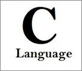

Ken Thompson e Dennis Ritchie (da esquerda para direita), os riadores das linguagens B e C, respectivamente.
O desenvolvimento inicial de C ocorreu no AT&T Bell Labs entre 1969 e 1973.
De acordo com Ritchie, o período mais criativo ocorreu em 1972.
A linguagem foi chamada "C", porque suas características foram obtidas a partir de uma linguagem anteriormente chamado de "B", que de acordo com a Ken Thompson era versão reduzida da linguagem de programação BCPL.
A versão original PDP-11 do sistema Unix foi desenvolvido em assembly.
Em 1973, com a adição dos tipos struct, a linguagem C
tornou-se poderosa o suficiente para que a maior parte do kernel
do Unix fosse reescrito em C.
Este foi um dos primeiros núcleos
de sistemas operacionais implementados numa linguagem diferente
da linguagem Assembly.
Em 1977, foram feitas novas mudanças por
Ritchie e Stephen C.
Johnson para facilitar a portabilidade do
sistema operacional Unix.
O Portable C Compiler de Johnson
serviu de base para várias implementações de C em novas
plataformas.
Visão geral
C é uma linguagem imperativa e procedural, para implementação de sistemas.
Seus pontos de design foram para ele ser compilado, fornecendo acesso de baixo nível à memória e baixos requerimentos do hardware.
Também foi desenvolvido para ser uma linguagem de alto nível, para maior reaproveitamento do código. C foi útil para muitas aplicações que foram codificadas originalmente em Assembly.
Essa propriedade não foi acidental; a linguagem C foi criada com o objectivo principal em mente: facilitar a criação de programas extensos com menos erros, recorrendo ao paradigma da programação procedural, mas sobrecarregando menos o autor do compilador, cujo trabalho complica-se ao ter de realizar as características complexas da linguagem.
Uma linguagem extremamente simples, com funcionalidades não-essenciais, tais como funções matemáticas ou manuseamento de ficheiros (arquivos), fornecida por um conjunto de bibliotecas de rotinas padronizada.
Ponto forte de C
C tem como ponto forte, a sua eficiência, e é a linguagem de programação preferida para o desenvolvimento de sistemas e softwares de
base, apesar de também ser usada para desenvolver programas de computador.
É também muito usada no ensino de ciência da computação,
mesmo não tendo sido projetada para estudantes e apresentando algumas dificuldades no seu uso.
Ponto fraco de C

C tem como ponto fraco, a falta de proteção que dá ao programador.
Praticamente tudo que se expressa em um programa em C, pode ser
executado, como por exemplo, pedir o vigésimo membro de um vetor com apenas dez membros.
Os resultados são muitas vezes totalmente
inesperados, e os erros, difíceis de encontrar.